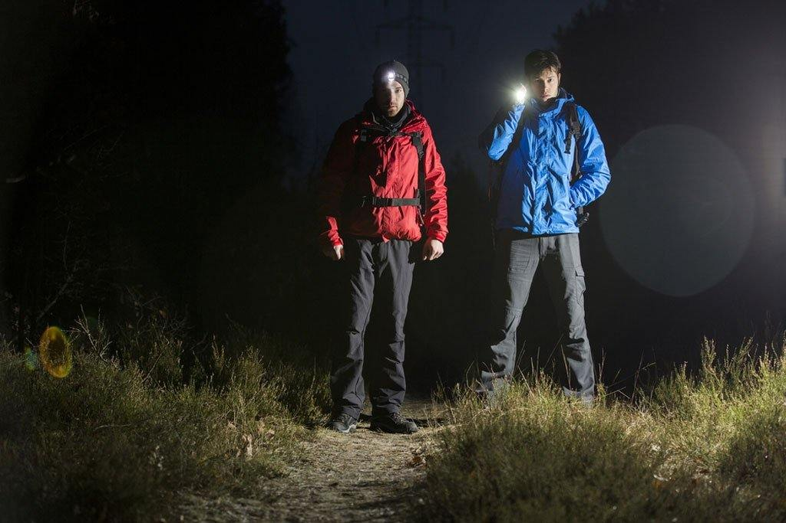
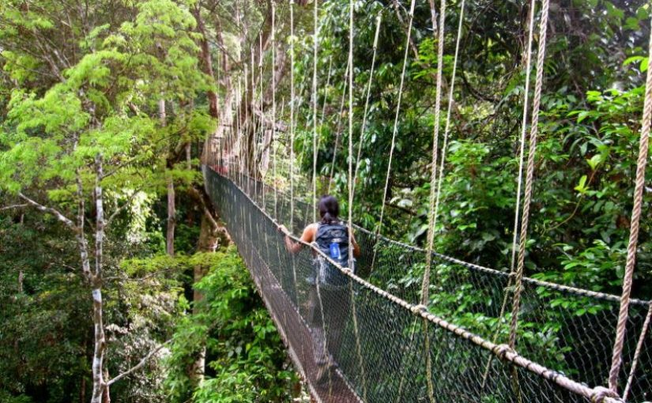

What is hiking?
Hiking is a long, vigorous walk, usually on trails or footpaths in the countryside. Walking for pleasure developed in Europe during the eighteenth century. Religious pilgrimages have existed much longer but they involve walking long distances for a spiritual purpose associated with specific religions.
Hiking Equipments
There are so many places to find your perfect hiking trail, from mountain trails to coastal paths. Maybe you want to discover new horizons or explore the surroundings around your base camp, take a break after a busy week, push yourself, or get lost in the sights and sounds of nature. Whatever drives you, your gear shouldn’t be a burden. In this article we’ll discuss everything you need to make your equipment work for whatever adventure you pursue. Essentials only. Keep that pack light!
Map and Compass

Taking the necessary time to look at a map before heading out on trail can help you assess and plan for what is ahead, and it can potentially save your life. Understanding the basic elements of a map can empower you to stay found, and know what's around you as you navigate safely from point A to point B while on trail.
Sunglasses, Sun Cream and a Sun Hat
Prolonged or intense exposure to the sun can cause painful sunburns in the short term, and in the long term, increases one's risk of skin cancer, and possibly hasten the onset of skin damage. Excess exposure to UV radiation can cause a burn on the corneas of your eyes (ouch!), and long-term exposure can lead to issues such as cataracts and macular degeneration.
First-Aid Kit
Fast response. Having a first aid kit ready in your pack when hiking can help prevent an injury from getting worse and can potentially save any trips to a walk in clinic or hospital. This is especially crucial, if an injury involves blood-loss. They help you treat ailments on the trail, thus minimizing the risk of infection or injury severity. A well-stocked kit contains items that treat burns, injuries, scrapes, and cuts.
Headlamp and/or Handheld Torch
You'll also find a flashlight useful in emergencies, especially since you can flash it strategically to make a distress signal. Hiking with a headlamp is ideal if you're hiking towards your tent or a safe place out in the wild. Using a headlamp will leave your hands free to do other activities such as collecting wood, picking up edibles, or even prepping up your sleeping area.
Food and Drinks
Any outdoor activity requires more energy than your usual daily activities. In order to be able to enjoy and endure the increased need for energy, your body will need more water and food. The food you choose to bring with you on a hike will fuel you throughout the day. Hiking snacks are a must-have on the trail. They'll keep you going throughout the day and provide you with that much needed energy required to get to where you're going.
For more info, watch this YouTube video
Famous Hiking Trails in Malaysia
Ready to rise to the challenge? Malaysia is home to breathtaking mountains, lush national parks and scenic landscapes that would excite any adventurous soul. The time it takes to complete each trail may differ depending on your fitness level and chosen trail, but this should give a rough indication of what to expect.
1. Bukit Tabur
Part of the Klang Gates Quartz Ridge (visible from Kuala Lumpur), Bukit Tabur is one of the most beautiful hiking trails in the Klang Valley. It is split into two distinct trails, Bukit Tabur East, and Bukit Tabur West. Both trails offer breathtaking views along the way, although the west side is often slightly more popular, especially during the weekends.
While neither trail is particularly difficult, they are both laden with quarts and slippery, rocky slopes. Because of this, you should definitely come with the appropriate footwear. If you make it to the top, an incredible sight awaits you, one that perfectly captures the dualistic beauty of Kuala Lumpur. The east trail ends with a panoramic view of the verdant hills while the western summit shows you a stunning view of the cityscape!
2. Forest Research Institute Malaysia (FRIM)
Out of all the places for hiking in Malaysia, FRIM is arguably one of the most frequented on the Peninsula. That’s because this forest reserve is located right on the outskirts of Kepong, just a short distance away from the Kuala Lumpur city centre. This pristine natural haven is perfect for cycling, hiking, and simply escaping the hustle and bustle of city life.
The hiking trails here are relatively easy. There are no steep ascents or battling with rocky terrain here, only leisurely strolls under the welcome shade of the verdant forest trees. The Rover Track is one of the most popular trails and if it’s your first time, this is where you want to start. However, take note that FRIM is more suited for locals so there is little signage to help you navigate.
3. Gunung Datuk
Gunung Datuk is located in the foresty hills of Negeri Sembilan, about an hour and a half away from Kuala Lumpur. Compared to most other hiking trails on this list, Gunung Datuk is slightly more challenging. It is also more time-consuming with the average time needed to complete the hike being about seven hours (both ways).
The terrain features a mixture of inclines and rocky slopes along with verdant, forested ascents. The final ascent also required you to climb up a few ladders mounted on some massive rocks! While it is a challenging climb, reaching the top rewards you with a truly magnificent sight. A panoramic view of the ambient town of Rembau is on offer. If you time your visit right, you’ll even see plenty of rainbows, an effect of the morning dew in the area.
4. Gunung Kinabalu
Gunung Kinabalu needs no introduction. It is the tallest mountain in Malaysia and the third highest peak in Southeast Asia. When you talk about hiking in Malaysia, you simply can’t leave this majestic mammoth of a mountain out of the picture! Located in Kinabalu National Park (itself an awesome jungle trekking experience), Mount Kinabalu is easily the most challenging hiking trail in Malaysia.
Ascending this UNESCO World Heritage Site is no mean feat and often takes about two full days to complete a round trip. You will also need to book a climb through a local tour/hiking company as the ascent can be a little precarious, especially for beginners. Along the way, you’ll get to experience the full beauty of Malaysia’s flora and fauna, before being absolutely blown away by the unparalleled views at the very top. At that moment, you’ll realise that all that hard work was more than worth it. Although, at this point, you may also want an ice pack for your sore limbs!
5. Broga Hill
Broga Hill, located in the sleepy town of Semenyih, Selangor, is one of my personal favourite spots for hiking in Malaysia. It isn’t the toughest hike you’ll ever experience but it IS one of the best places to catch the sunrise in Malaysia. It takes about two hours to reach the summit and the best time to set out, from experience, is around 4:30 in the morning. This gives you ample time to catch the break of dawn.
You’ll want to bring torchlights and water for the trip. Though the hiking trail is relatively smooth (with some rocky paths along the way), you’ll still want to lace up comfortable shoes.
6. Gunung Tok Wan
Sticking to hiking trails in Semenyih, Gunung Tok Wan is a steep mountain that lies just beyond the trail of Broga Hill. Trust me, this is arguably one of the toughest hiking trails in Malaysia, mainly because it STARTS at the peak of Broga Hill! So after enjoying your lovely sunrise, instead of heading back down for breakfast, you can simply continue your ascent to new heights!
Thankfully, the distance between the peak of Broga Hill to Gunung Tok Wan is only about 200 metres and you should be able to get there within an hour. At the top, you’ll be able to admire the spawling expanse of Broga Hill and the town of Semenyih in a spectacular panorama.
7. Penang Hill

Here’s one of the places for hiking in Malaysia that is slightly underrated. Penang Hill is one of the most famous destinations in the country. However, most visitors will opt to ride the Penang Hill funicular to the top (which, I admit, is a fun experience). What most tourists DON’T know is that you can also hike around the hill by trekking through the Penang Hill Loop trail.
The loop hike trail is about 11 kilometres long and takes about five hours to complete. The trail is often rather steep and not always well marked, but there is a fine view from the summit. Be prepared to traverse through dense jungle trails though, which I suppose is one of the unique features of this particular hike.
8. Gunung Angsi
It’s said that Gunung Angsi is one of the easiest hiking trails in Malaysia. The mountain is no taller than 825 meters and it doesn’t take longer than an hour and a half to get to the summit. There are two hiking trails at Gunung Angsi, accessible via the Ulu Bendul entrance and the Bukit Putus entrance. The Ulu Bendul trail is slightly tougher as it is longer and features some steep inclines.
Regardless of which trail you choose, they both converge at the same peak. The top is a lovely clearing where you can simply lay on the ground and let the sweet sounds of Mother Nature serenade you. While the view isn’t as breathtaking as other hiking trails in Malaysia, it still makes for a relaxing hike to put your mind at ease.
9. Bukit Chenuang

Bukit Chenuang is located near Hulu Langat, Selangor, and is one of the many places for hiking in Malaysia that take you through forested paths filled with rivers and verdant greenery. There are several trails that lead to the summit, but one of the most interesting ones starts conveniently at Sungai Congkak Recreational Forest. It takes about four hours to get to the summit, and a little less to get back down.
10. Gunung Ledang
Finally, the tallest mountain peak in Johor, Gunung Ledang, also known as Mount Ophir in English, is one of the most popular hiking trails in Malaysia. It lies a short drive from Kuala Lumpur and features breathtaking natural scenery and excellent views. Fit hikers can make it to the summit in less than six hours.
Do you know any other famous hiking trails in Malaysia? Let us know at cycool29@gmail.com!